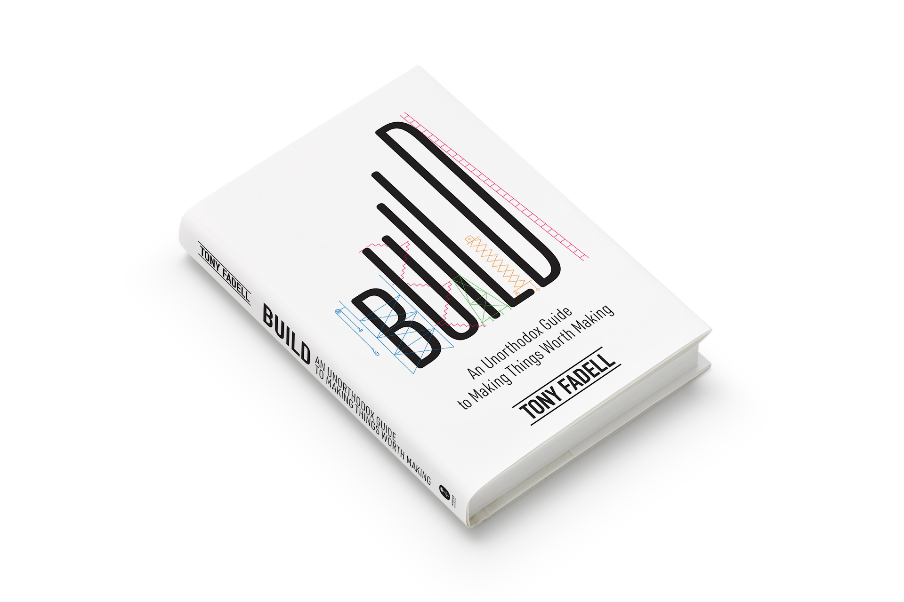
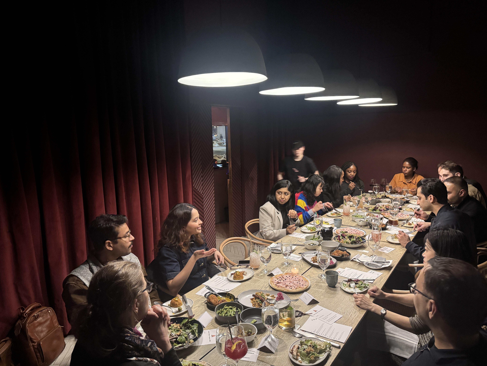
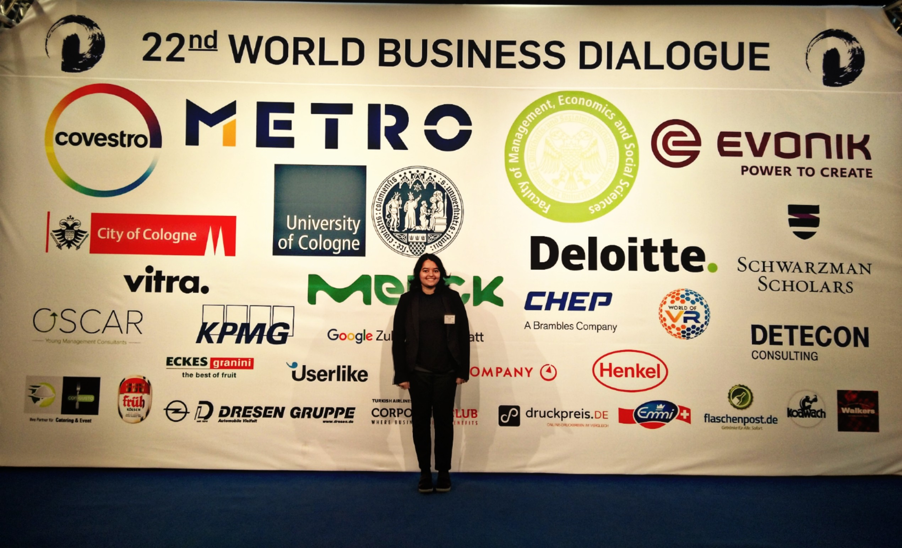

The person behind the products. Everything the resume doesn't tell you.
Tanya Gupta
Product Manager
Professional Translator of Chaos
Product Leader with P&L responsibility and 5+ years experience managing diverse portfolios. Driving cross-functional teams to deliver solutions in regulated, high-stakes environments. Proven track record of driving user engagement and operational efficiency across healthcare, finance, and manufacturing sectors. Leveraging AI to build new products that scale.
Carnegie Mellon MS and IIT Bombay B.Tech graduate who's navigated the full spectrum — from medical devices where a bug could cost a life, to enterprise software where a bug costs a quarterly review. Every industry switch taught me to unlearn fast and rebuild my mental models from scratch.
I'm the person who translates between "Engineering says 6 weeks" and "Sales promised it tomorrow." Spent years building products in industries where one bug could literally kill someone or trigger an audit. Fluent in: stakeholder management, regulatory jujitsu, and ensuring Gantt charts matter. Recovering from extreme customer empathy and learning to say "no" without deprioritizing features. My superpower? Aligning everyone in the room through multiple meetings about meetings.
Went from IIT Bombay to Carnegie Mellon to "wait, why does this medical device UI look like it was designed in 2003?" Every time I switch industries, I spend the first three months feeling like an impostor and the next three realizing everyone else is also figuring it out.
Every product decision starts with empathy. I prioritize direct user research — interviews, observations, data analysis — to build products that solve real problems, not assumed ones.
I talk to actual humans before writing a PRD. Revolutionary, I know. You'd be amazed how many PMs skip this step and then wonder why nobody uses their feature.
The obvious blocker is rarely the actual one. I dig into organizational, technical, and market constraints to find what's truly holding a product back — then design around it.
The stated problem is never the real problem. "We need a dashboard" actually means "my VP wants to look smart in board meetings." Finding the actual constraint saves months.
Features ship. Systems scale. I think about how each decision fits into the broader product ecosystem, user workflows, and business model — not just the immediate ask.
Anyone can ship a feature. The hard part is not creating a Frankenstein product in the process. I think about how things connect, or you end up with 47 settings pages.
Metrics should drive decisions, not vanity. I focus on identifying the right KPIs that connect user behavior to business outcomes, and build feedback loops that actually inform iteration.
DAU means nothing if your users are rage-clicking. I care about metrics that actually tell you if people's lives got better, not just if they opened the app.
The substacks, books, events, and experiences that shape how I think about product. The stuff I consume instead of sleeping at a reasonable hour.
Newsletters that sharpen my product thinking and keep me plugged into what matters.
The newsletters I actually open instead of letting them pile up to 4,327 unread.

Books and long-reads that have shaped my approach to product, systems thinking, and leadership.
Books I've actually finished, not just bought and displayed on a shelf to look smart.

Conferences, meetups, and communities where I learn from other practitioners and share ideas.
Places where I swap war stories with other PMs and realize we're all living the same chaos.

Traveling across cultures has deepened my empathy for diverse users and taught me that context shapes everything.
Nothing humbles your assumptions like trying to use a transit app in a language you don't speak.
Open to Product Management opportunities. Let's discuss how I can drive impact for your organization. Hire me if you appreciate PMs who've actually shipped things and aren't afraid to admit when stakeholder alignment is a myth.